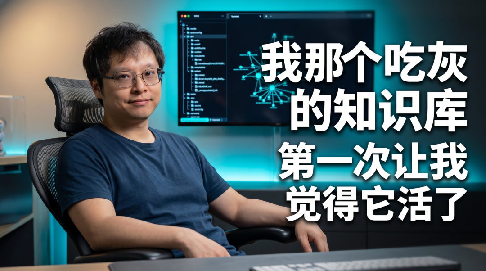
Karpathy 那个 LLM Wiki 最近是真的杀疯了。
说实话，这东西火了这么久，我一直拖着没动手。
Karpathy 发的是一份 gist，讲的是思路，不是拿来就能用的产品。对纯粹的 PKM 爱好者来说没问题，对我这种执行力时好时坏的人来说，光是想到我要搭哪些目录、写什么规矩，就犯懒了。
AI 圈有句话，只要你学得慢，就不用学了，因为更新迭代太快了。
也是巧，Nous Research 上礼拜干了一件事，正好把前面那堆让我犯懒的门槛给砍没了，他们把 Karpathy 这套 LLM Wiki 直接打包成了 Hermes Agent 的内置 skill。
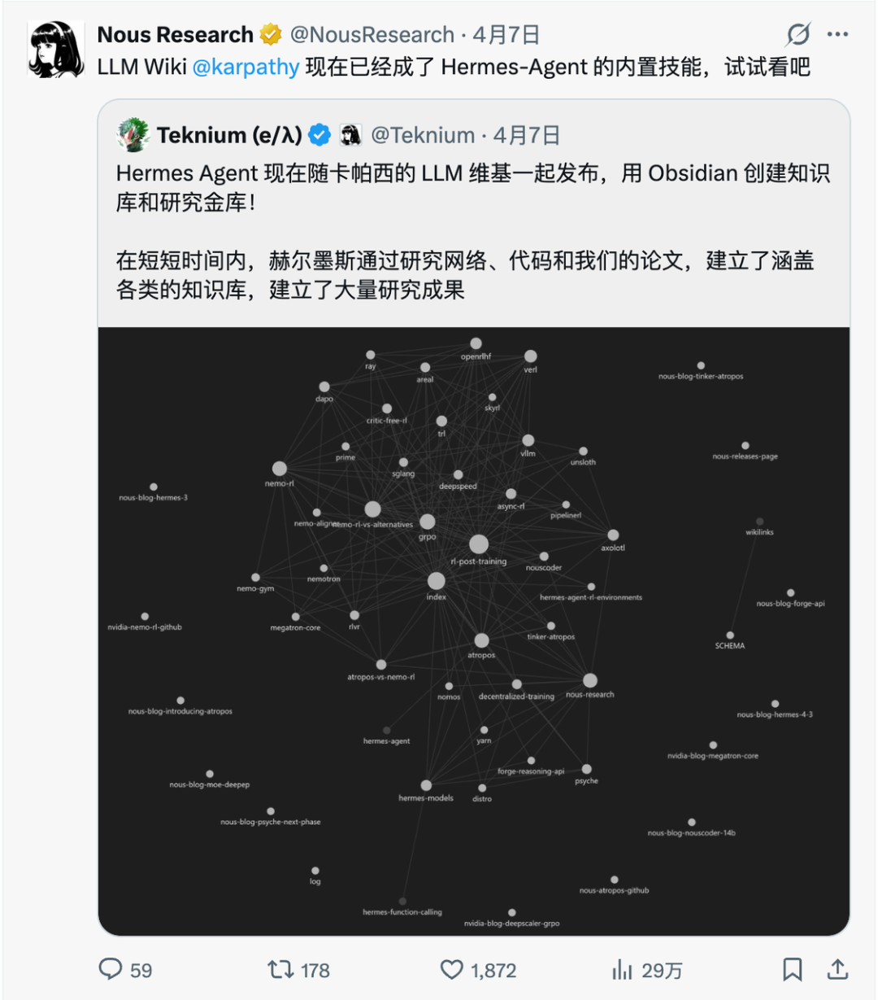
原本你得读完 gist 再手动配一遍，现在一条命令跑起来就完事。
两个最近最火的东西，就这么撞在一起了。
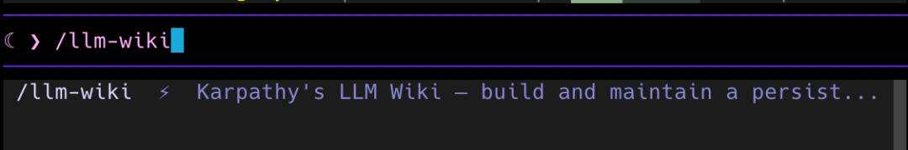
我花了半天时间把自己这一年攒的课程素材、已发布的文章、OpenClaw 和 n8n 的项目文档一股脑扔进去跑了一遍。
跑完之后，我那个躺着吃灰好久的 Obsidian 库，第一次让我觉得它不是一座负债的仓库，而是一个能被我调用的东西。
今天就把整个过程拆开讲讲。
先给你一句话，后面都围着它转
Obsidian 是你的 IDE，LLM 是你的程序员，Wiki 就是你的代码库。
Karpathy 原版是LLM 是程序员，Wiki 是 CodeBase，我加了个 IDE。因为只有这个类比能帮你瞬间理解，为什么它跟你之前用过的那些 AI 笔记工具、RAG 问答系统，完全不是一个物种。
为什么传统的 AI 知识库，用到最后都会让你失望
先讲清楚这东西到底解决了什么问题，后面的步骤你才不会白跑。
你有没有过这种体验。
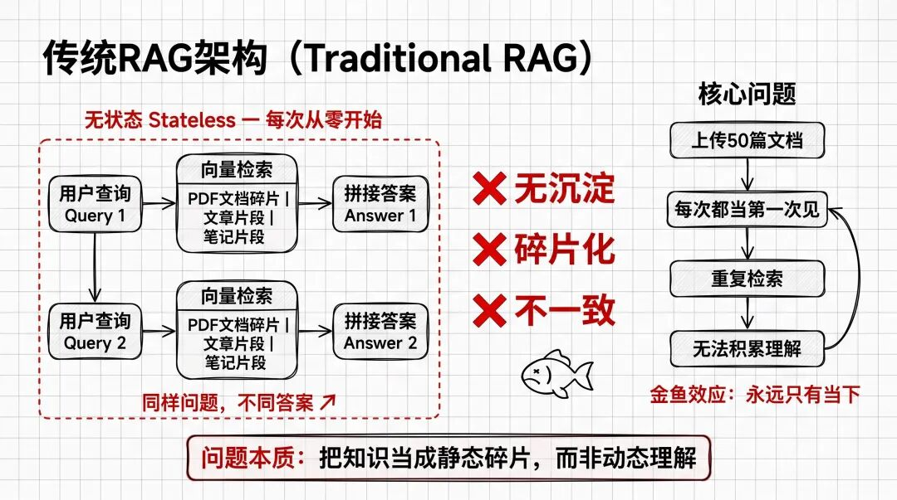
打开 ChatGPT 或 NotebookLM，上传一堆 PDF、文章、笔记。开始提问，AI 给你拼出一个答案，看起来挺靠谱。但下次你再问一个相关问题，它还是从零开始检索、重新拼接。问同一个问题，它甚至可能给你两个不一样的答案。
这就是传统 RAG 最难受的地方，每一次查询都是独立的，什么都不会沉淀下来。
你读了 50 篇文章喂进去，它还是把每一篇当作第一次见。你用得越多，越觉得这东西像个金鱼，永远只有 7 秒记忆。
Karpathy 这个 LLM Wiki 模式，打的就是这个痛点。
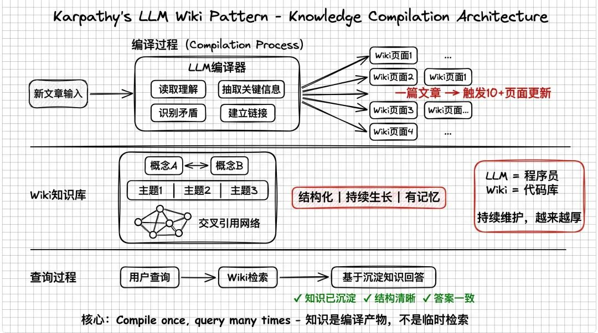
它不让 LLM 每次从原始文档里临时捞信息，而是让 LLM 先把原始材料编译成一个结构化的 Wiki，之后你所有的查询都发生在这个 Wiki 上。
注意这个词，编译，compile。
你扔一篇新文章进去，LLM 不是把它索引一下就算完。它会读完、抽出关键信息、更新现有的 Wiki 页面、建立交叉链接、还会主动指出新信息和旧信息哪里对不上。一篇文章下去，可能触发 10 几个页面的更新。
所以你的知识不是每次都重新发现一遍了，而是一次写进去之后，之后慢慢长。
Karpathy 那句比喻就是这个意思：LLM 是你的程序员，Wiki 是它维护的代码库。代码库会越写越厚、结构会越来越清晰，而不是每次提需求都让程序员从空白文件夹重新来。
Wiki 的三层骨架，搞懂这个就搞懂了一半
在真正上手之前，我强烈建议把三层结构过一遍。不然你跑完命令看到一堆目录会一脸懵。
这部分是 Karpathy 那份 gist 的核心设计，Hermes 里的 llm-wiki 也是按这个骨架落地的。
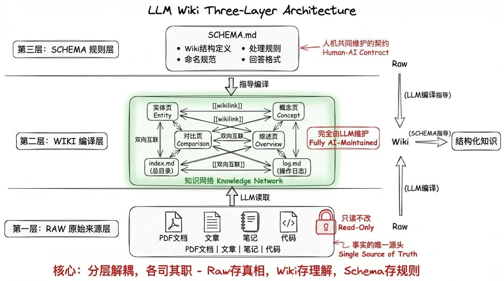
第一层：raw（原始来源层）
你扔进去的原始材料，文档、文章、笔记、代码。这一层有一个铁律，LLM 只读不改，它是"事实的唯一源头"。
第二层：wiki（编译层）
LLM 根据 SCHEMA 规则编译出来的页面网络。实体页、概念页、对比页、综述页，再加上 index.md（总目录）和 log.md（操作日志）。页面之间靠 [[wikilink]] 双向互联。
这一层基本不用你动手，LLM 自己维护。
第三层：SCHEMA（规则层）
只有一个核心文件 SCHEMA.md。它告诉 LLM：Wiki 长什么结构、命名用什么惯例、新材料进来怎么处理、回答问题按什么格式。这一层是你和 AI 共同维护的，你们之间的契约就写在这里。
为什么这三层是关键？
第一层是事实源头，只读。
第二层是 LLM 的工作区，持续写入。
第三层是你们共同的规则，一起改。
读写分开，规则写死，规则本身还能跟着进化。这三点一拉通，Wiki 就不会变成一团浆糊。
在 Hermes 里实际跑一遍
概念讲完，上手。下面都是我自己实际跑出来的流程，每一步都有截图对照。
第一步：初始化一个 Wiki
升级到最新版本的 Hermes 之后，直接丢一条命令给它：
/llm-wiki 创建一个用于存储自动化第二大脑的知识库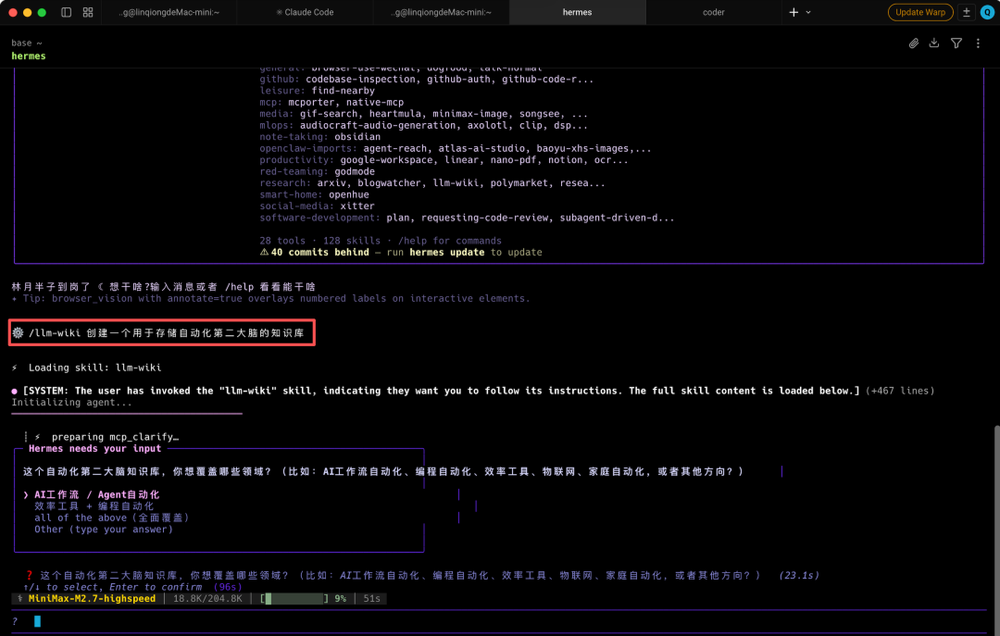
Hermes Agent 会调用它内置的 llm-wiki skill 来创建知识库。整个过程它会按照三层架构帮你把目录搭好、把 SCHEMA.md 初始化好，基本不用你操心。
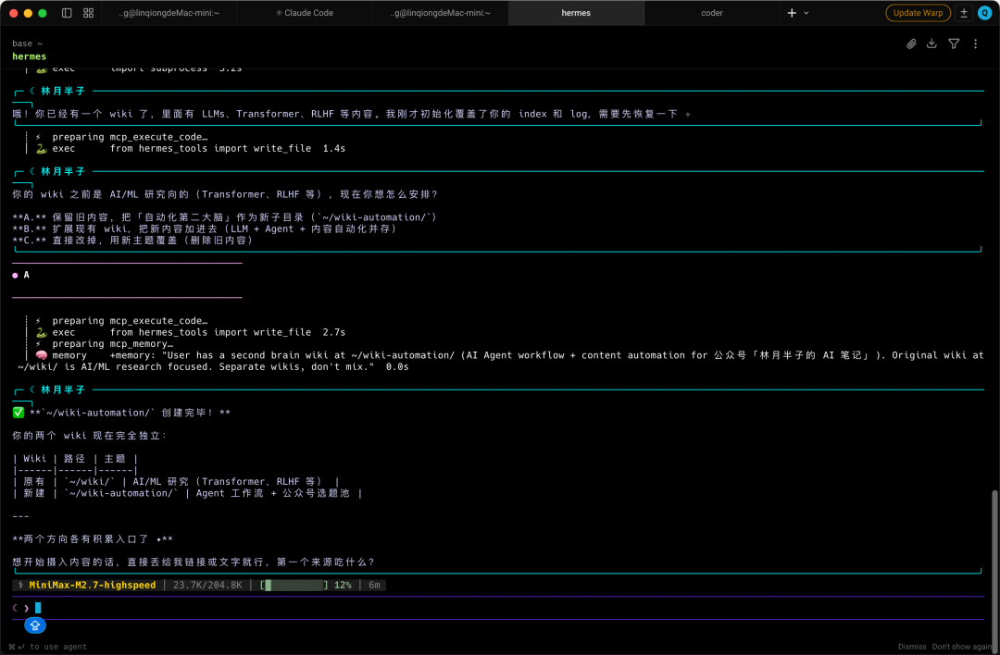
我原来已经有一个 wiki 目录了，所以这次建了个新的 wiki-automation。
搞定之后看一下生成的目录结构：
base ~/wiki-automation
tree
.
├── SCHEMA.md # 第三层：规则层，你和 AI 的契约
├── comparisons # 对比页（A vs B 类分析）
├── concepts # 概念页（一个概念一页）
├── entities # 实体页（工具、人、项目各一页）
├── index.md # 总目录，Wiki 的导航入口
├── log.md # 操作日志，每次编译都会追加记录
├── queries # 查询回填页（好答案归档到这里）
└── raw # 第一层：原始来源，LLM 只读不改
├── articles # 你的文章
├── assets # 图片等附件
├── papers # 论文 / 技术文档
└── transcripts # 音频 / 视频转录稿
10 directories, 3 files三层结构都在里面了：raw/ 是第一层原始来源，concepts/、entities/、comparisons/、queries/ 加上 index.md 和 log.md 构成了第二层 Wiki 编译产物，SCHEMA.md 是第三层规则。
施工图画好了，下面开始填东西。
第二步：投喂原始材料，让 Wiki 真正长出来
目录搭好了，下一步就是往里面喂东西。
我最近在研究 Hermes 的多 Agent 协作模式，手上攒了几个相关的链接。有 GitHub 仓库、有官方文档、有别人写的集成教程。我就直接把这几个链接丢给了 Hermes。
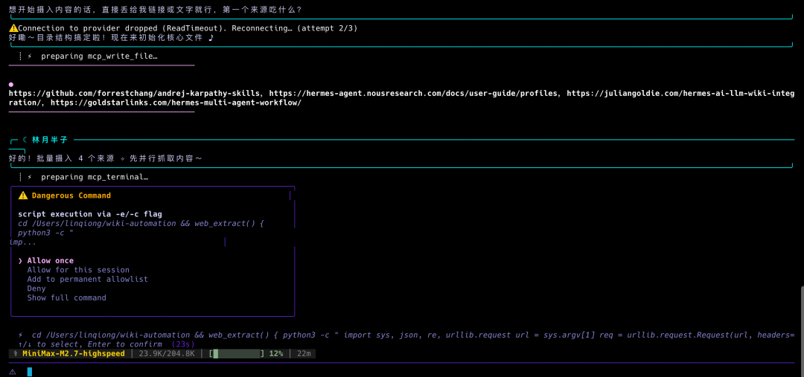
它自己就开始干活了。
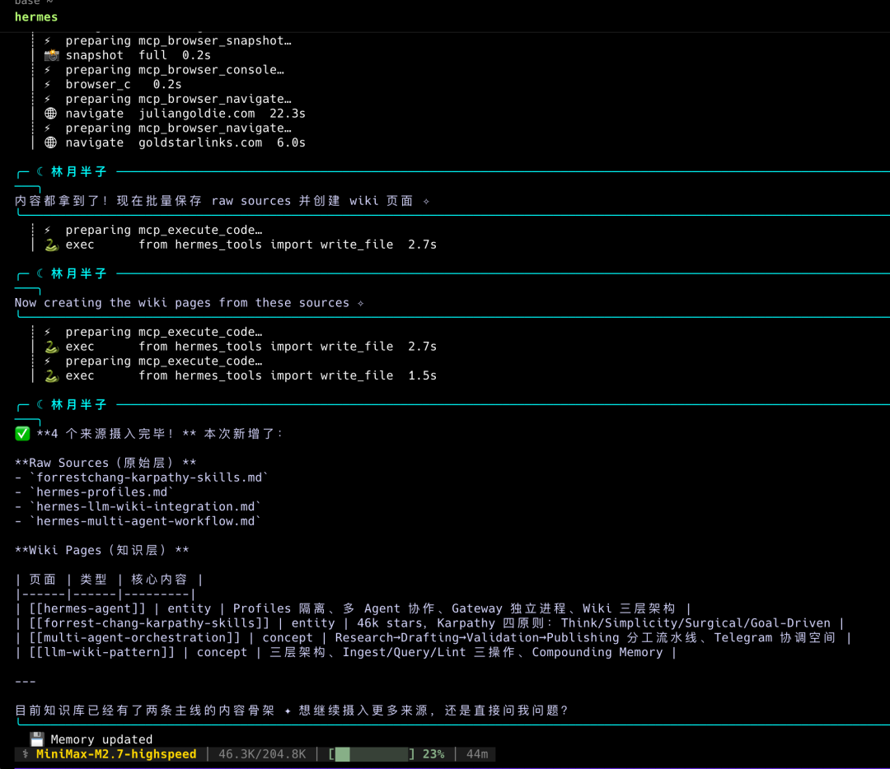
精彩的地方来了。Hermes 不是把链接收藏一下就完事。它在后台干了这几件事:
先把每个链接的完整内容抓下来，再抽出里面的关键实体——工具名、人、项目、概念。然后去更新或者新建对应的实体页和概念页，顺手把 index.md 和 log.md 刷一遍。最贴心的是，要是它发现新内容和已有页面有矛盾，会专门给你标出来。
4 个链接丢进去，Wiki 里一下子多了 4 个编译页面，index.md 和 log.md 也跟着刷新了。
tree
.
├── SCHEMA.md
├── comparisons
├── concepts
│ ├── llm-wiki-pattern.md # 🆕 自动生成的概念页
│ └── multi-agent-orchestration.md # 🆕 自动生成的概念页
├── entities
│ ├── forrest-chang-karpathy-skills.md # 🆕 自动生成的实体页
│ └── hermes-agent.md # 🆕 自动生成的实体页
├── index.md # ✏️ 已更新，新增了 4 个条目
├── log.md # ✏️ 已更新，追加了本次操作记录
├── queries
└── raw
├── articles
│ ├── forrestchang-karpathy-skills.md # 来源 1
│ ├── hermes-llm-wiki-integration.md # 来源 2
│ ├── hermes-multi-agent-workflow.md # 来源 3
│ └── hermes-profiles.md # 来源 4
├── assets
├── papers
└── transcripts
10 directories, 11 files跟初始化的时候对比一下,文件数从 3 个变成了 11 个。4 个链接丢进去，raw/ 里多了 4 篇抓取下来的原始文章，concepts/ 和 entities/ 里各自长出了 2 个编译页面，index.md 和 log.md 也跟着刷新了。
复利就从这里开始滚。
思维引导：raw 层放什么，决定了 Wiki 是"你的"还是"世界的"
这个观点我是从 @王树义老师 那篇文章里学到的，他讲得特别透。如果你往 raw 里塞的是各种剪藏网页、别人的论文、三方笔记，编译出来的 Wiki 再漂亮也是"世界知识的折中版"，不是你的声音。
反过来，你扔进去的是自己写过的东西、自己消化过的思考、自己干过的项目文档，编译出来的 Wiki 才是你的思想地图。
所以 raw 层不是越多越好，而是越"自己"越好。
我上面是直接丢链接，这是最快的方式。日常积累还有另一个路子：装一个 Obsidian Web Clipper 浏览器扩展。Karpathy 自己也在用，看到好文章点一下，自动转成 markdown 存到 raw/articles/ 里。
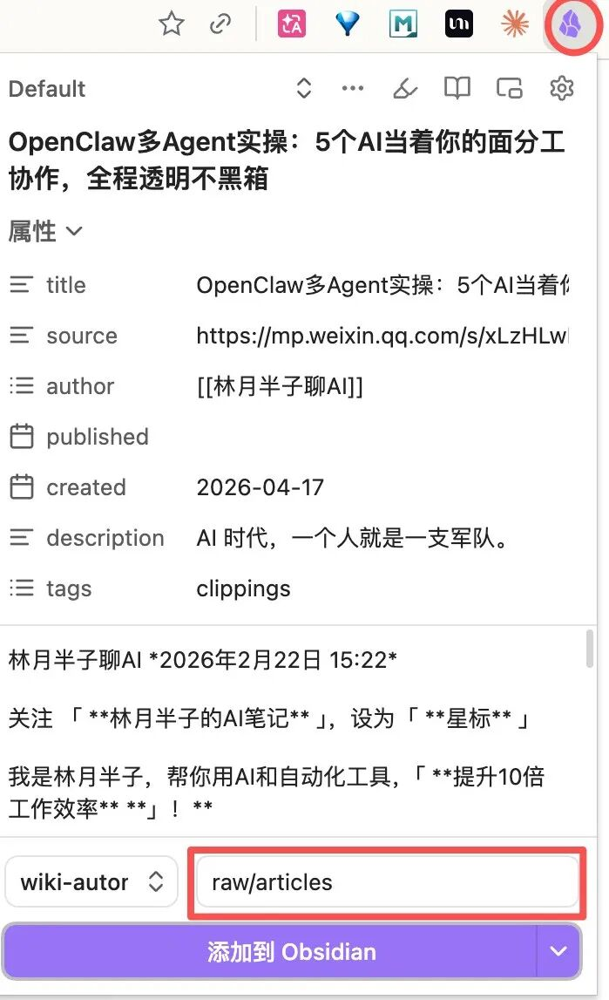
攒够一批之后，跟 Hermes 说一声：
ingest raw/ 里的所有素材它就会把这批新来源全部编译进去。链接投喂适合快速体验，Web Clipper 适合长期积累，两种方式搭着用。
用 Obsidian 打开你的 Wiki
这里多说一句。还记得前面那个比喻吗，Obsidian 是你的 IDE，LLM 是你的程序员，Wiki 就是你的代码库。
代码库搭好了，你得有个 IDE 来看它。
打开 Obsidian，把刚才 Hermes 创建的 Wiki 目录直接作为 Vault 打开就行。
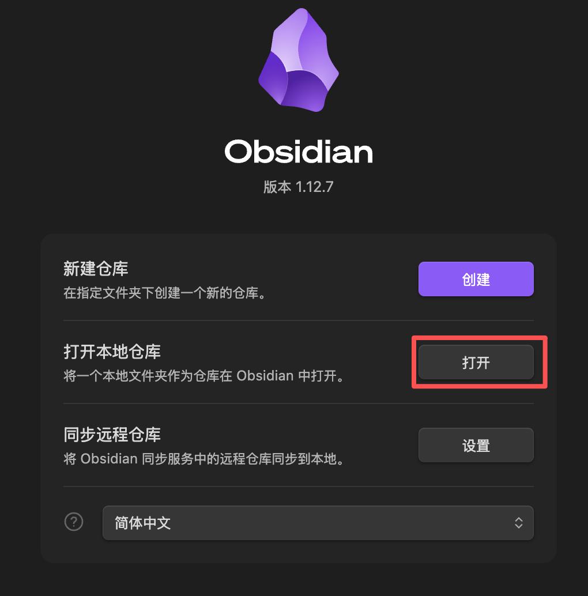
你会看到所有的 [[wikilink]] 双向链接都活了。点一个实体页就能跳到相关的概念页，Obsidian 的 Graph View 还能让你直观看到整个知识网络的结构。这就是为什么 Obsidian 是这套系统的最佳搭档。
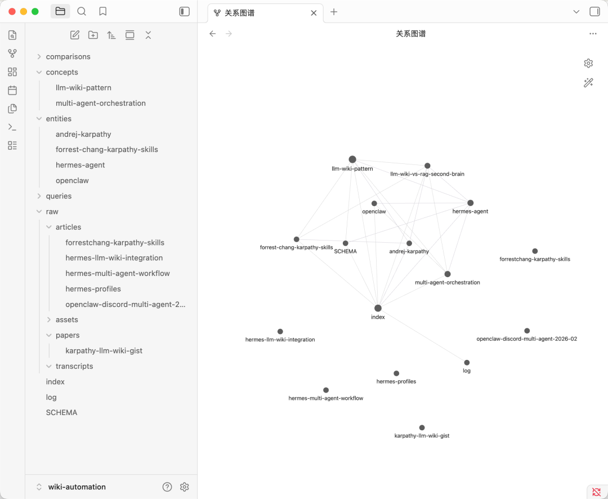
第三步：提问，让沉淀的知识"活"起来
投喂了一批素材之后，就可以开始问问题了。
我试的第一个问题：
Hermes 的多 Agent 协作模式跟 OpenClaw 的 Agent 系统有什么区别？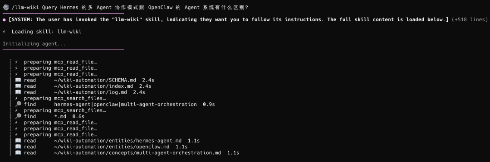
这个问题其实挺刁的。答案散落在好几个不同来源里，你要自己把这几篇文章和文档翻一遍再综合，至少得花半小时。但 Hermes 读了 Wiki 里已经编译好的实体页和概念页，几秒钟就把脉络整理出来了，每个论点后面都有引用。
更关键的是，Hermes 会自动把高质量回答归档到 queries/ 目录，变成新的 Wiki 页面。
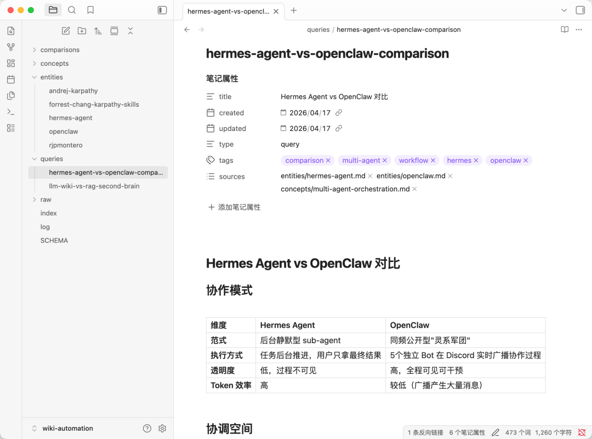
你的提问和分析不会消失在聊天记录里，而是会反过来填充回 Wiki。
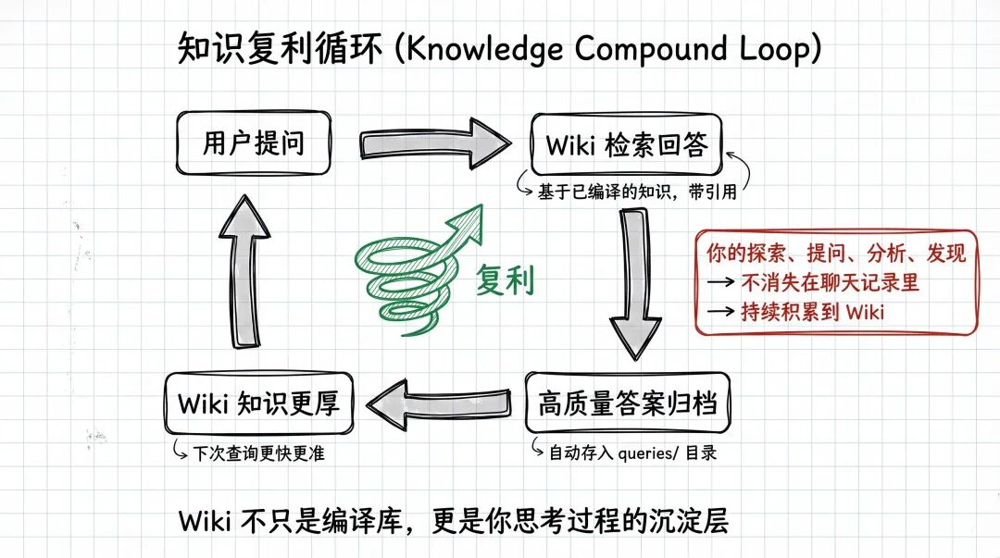
换句话讲，你的 Wiki 不光是个编译库，它也在悄悄记录你思考的过程。
第四步：定期 lint，给 Wiki 做体检
这一步很多人会忽略，但巨重要。
Karpathy 从程序员的行话里借了个词叫 lint，本来是用来扫代码风格问题的。放到 Wiki 里，它扫的是这四类东西：
互相打架的论点(你新观点推翻了旧观点,但旧页面没改)、过时内容(几个月前的判断现在还成立吗)、孤儿页(没有任何地方链接过来的页面)、索引里缺的条目和高频提及但没有专页的概念。
跟 Hermes 说一声：
lint 这个 wiki它会把整个 Wiki 过一遍，把发现的问题列出来让你确认。
我的建议是至少每周跑一次。做不做这一步，就是"可持续 Wiki"和"又一个吃灰库"的分水岭。
传统 RAG vs LLM Wiki，区别到底在哪
到这里你应该能感觉到，LLM Wiki 跟传统 RAG 已经不是一个物种了。
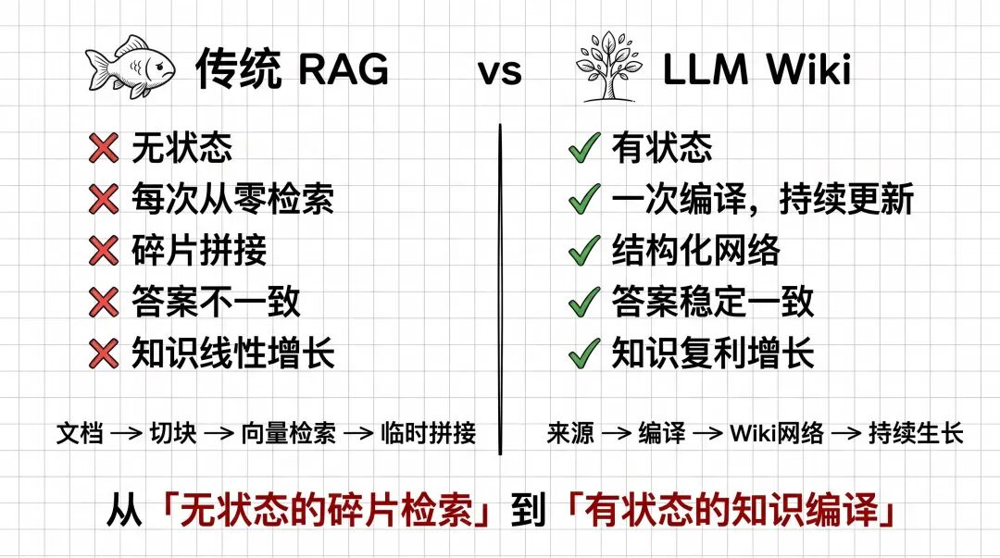
一句话概括最大的区别：
RAG 是每次问问题都现捞，LLM Wiki 是把知识先编译再用。
RAG 像是你每次饿了才下厨，材料都是生的，每次都从洗菜切菜开始。 LLM Wiki 像是你搭了一个厨房，每次新食材进来先被处理入库，下次你要出菜时，已经是半成品甚至成品。
所以你用得越久，差距越大。所谓"知识复利"，落地之后就是这么回事。
有几件事必须提前说清楚
跑通之后我得跟你说几个坑,不然你会踩到我踩过的那几个。
第一件事：raw 放什么，比工具选什么重要一百倍。
前面思维引导里讲过了，只放你自己写过的、消化过的、干过的东西。
第二件事：LLM 会产生幻觉，你得亲自审核。
这里我借用 @王树义老师 提出的「红绿灯原则」：
这条原则一旦破掉，你的 Wiki 就会变成"通用知识的二手转述"，失去它最核心的价值。
第三件事：别一上来就上向量库，也别想着一口吃成胖子。
Karpathy 在 gist 里明确说了，个人知识库这个量级（大概 100 篇、40 万字以内），靠 index.md 加摘要就够导航了，没必要上一整套 RAG 基建。
也别试图一次把所有素材都喂进去。我的做法是先挑一类最熟悉的，比如你已发布的文章——跑一轮最小闭环，让 SCHEMA 和页面模板先磨顺，再把别的类型逐批接进来。
先窄后宽，先跑通再扩展。
写在最后
Karpathy 在 gist 里有一段话我反复读了几遍，翻译过来大意是：
维护知识库的繁琐部分，不在阅读，不在思考，而在于记账。更新交叉引用、保持摘要最新、建索引、补链接。人类放弃 Wiki，是因为维护负担增长得比价值还快。
这句话戳中了我一直想说又没说出来的一件事：过去十几年我们做不好个人知识管理，不是我们不会读书、不会记笔记，而是没有一个不知疲倦的维护员。
现在这个维护员出现了。它叫 LLM。
Hermes 把它打包成了内置技能，门槛砍到了一条命令。我跑完的感受是：之前用过 Evernote、Notion、Logseq，最后都败给了同一个敌人：我懒得维护。
LLM Wiki 是第一个让我觉得，就算我不盯着它，它也能自己长大的知识系统。
如果你也是那种收藏夹 500 个、真正看过的不到 50 个的人，花个把小时跑一遍这套组合。
别让它变成下一个"只要学得慢就不用学"的工具。
加入社群
我平时主要折腾 n8n 自动化、OpenClaw 和各种 AI Agent 实战，群里经常有人分享踩坑经验、工作流配置和新工具的第一手体验。
遇到问题群里问，看完文章群里聊。点击下方加入，一起搞。
如果觉得不错，随手点个「赞」和「在看」，转发给需要的朋友吧～
第一时间收到推送，记得给我个星标⭐